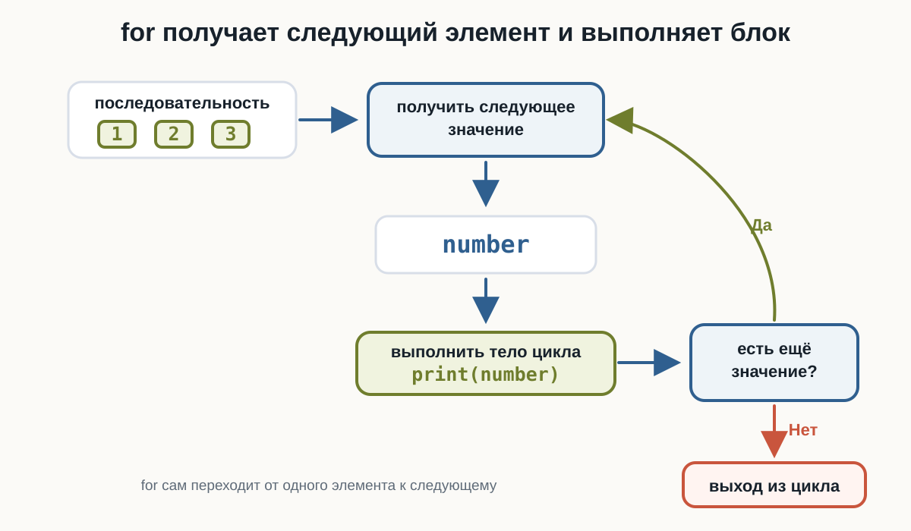
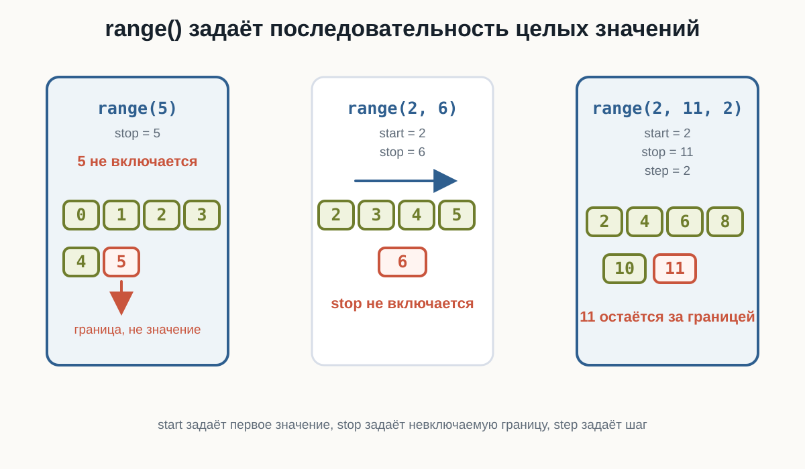
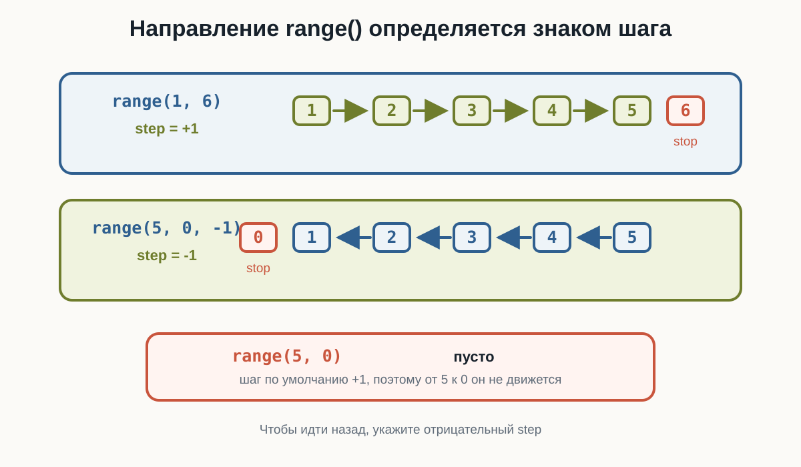
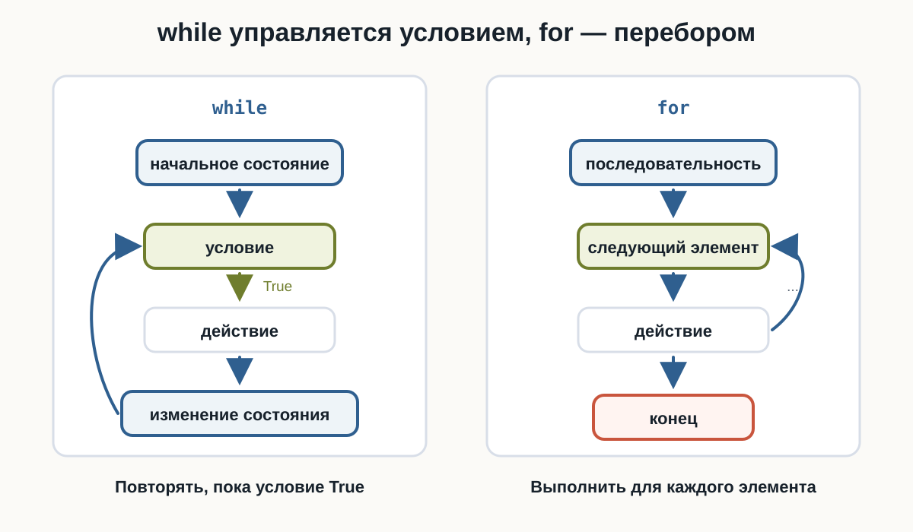
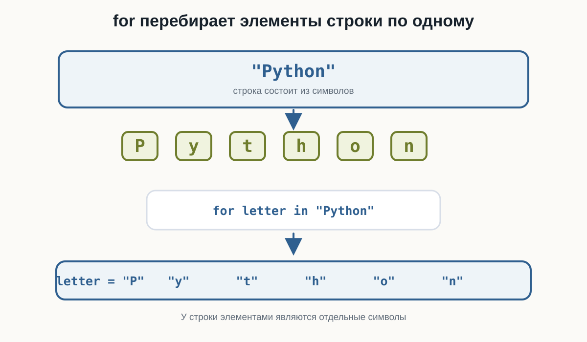

3.10 Цикл for
Главный вопрос главы:
Как повторять действия для каждого элемента или значения последовательности?
В предыдущей главе мы познакомились с циклом while.
Например:
number = 1
while number <= 5:
print(number)
number += 1Результат:
1
2
3
4
5Здесь нам пришлось самостоятельно:
- создать счётчик;
- задать условие;
- изменять счётчик внутри цикла.
Но во многих задачах мы заранее знаем, какие значения нужно перебрать.
Например:
числа от 1 до 5
каждый символ строки
несколько повторений одного действияДля таких случаев в Python существует цикл:
forПервый цикл for
Начнём с простого примера:
for number in range(1, 6):
print(number)Результат:
1
2
3
4
5На первый взгляд здесь появились сразу несколько новых элементов:
forinrange()Разберём их постепенно.
Как читать цикл for
Код:
for number in range(1, 6):
print(number)можно прочитать примерно так:
Для каждого значения
numberиз последовательности от1до5выполнитьprint(number).
Во время работы number последовательно получает значения:
1
2
3
4
5Для каждого из них выполняется тело цикла.
Как работает for
Рассмотрим:
for number in range(1, 4):
print(number)range(1, 4) задаёт значения:
1
2
3Первая итерация:
number = 1Python выполняет:
print(number)Затем:
number = 2и блок выполняется снова.
После этого:
number = 3и выполняется третья итерация.
Когда значения заканчиваются, цикл завершается.
Общая схема:

Переменная цикла
В конструкции:
for number in range(1, 6):number называется переменной цикла.
На каждой итерации она получает очередное значение.
Например:
for number in range(1, 4):
print("Текущее значение:", number)Результат:
Текущее значение: 1
Текущее значение: 2
Текущее значение: 3Можно представить:
итерация 1 → number = 1
итерация 2 → number = 2
итерация 3 → number = 3Нам не нужно вручную писать:
number += 1Цикл for сам переходит к следующему значению.
Что делает range()
В предыдущем примере использовалась функция:
range()Она задаёт последовательность целых чисел.
Например:
range(1, 6)соответствует значениям:
1
2
3
4
5Обратите внимание:
6 не входитВторое число задаёт границу, до которой нужно идти, не включая её.
range(1, 6)даёт:
1
2
3
4
5но не 6.
Это одно из самых важных правил range().
range() с одним аргументом
Можно написать:
range(5)Это означает:
0
1
2
3
4Поэтому:
for number in range(5):
print(number)выведет:
0
1
2
3
4Если начало не указано, Python начинает с:
0Получается:
range(5)
↓
0, 1, 2, 3, 4range() с двумя аргументами
Запись:
range(start, stop)задаёт:
начало
↓
...
↓
до stop, не включая stopНапример:
for number in range(3, 8):
print(number)Результат:
3
4
5
6
7То есть:
start = 3
stop = 8Проверьте в HTML-версии две базовые формы range(): с одним аргументом и с двумя аргументами.
range() с шагом
У range() может быть третий аргумент:
range(start, stop, step)Он задаёт шаг.
Например:
for number in range(2, 11, 2):
print(number)Результат:
2
4
6
8
10Здесь:
start = 2
stop = 11
step = 2Каждое следующее значение увеличивается на 2.

Шаг может быть больше единицы
Например:
for number in range(0, 21, 5):
print(number)Результат:
0
5
10
15
20Можно представить:
0
↓ +5
5
↓ +5
10
↓ +5
15
↓ +5
20Поменяйте в HTML-версии третий аргумент range() и посмотрите, как меняется шаг.
Обратный отсчёт
Шаг может быть отрицательным.
Например:
for number in range(5, 0, -1):
print(number)
print("Старт!")Результат:
5
4
3
2
1
Старт!Здесь:
start = 5
stop = 0
step = -1Значение 0 снова не включается.
Важно правильно задать направление
Рассмотрим:
for number in range(5, 0):
print(number)Такой цикл ничего не выведет.
Почему?
По умолчанию шаг равен:
+1Но нам нужно двигаться:
5 → 4 → 3 → 2 → 1То есть вниз.
Поэтому нужен отрицательный шаг:
range(5, 0, -1)Если начало больше конца:
range(5, 0)а шаг положительный, значений не будет.
Для движения назад используйте отрицательный шаг:
range(5, 0, -1)
Повторение действия несколько раз
Иногда само значение переменной цикла не так важно.
Например, нужно вывести сообщение пять раз:
for number in range(5):
print("Изучаю Python")Результат:
Изучаю Python
Изучаю Python
Изучаю Python
Изучаю Python
Изучаю Pythonrange(5) задаёт пять значений для перебора:
0
1
2
3
4Поэтому тело выполняется пять раз.
Отступы работают так же, как в if и while
Тело for определяется отступом:
for number in range(3):
print("Итерация")
print(number)
print("Цикл завершён")Результат:
Итерация
0
Итерация
1
Итерация
2
Цикл завершёнДве строки:
print("Итерация")
print(number)принадлежат циклу.
А:
print("Цикл завершён")выполняется после цикла.
for и while могут решать одну задачу
Рассмотрим while:
number = 1
while number <= 5:
print(number)
number += 1То же самое можно написать через for:
for number in range(1, 6):
print(number)Результат в обоих случаях:
1
2
3
4
5Но for короче.
Когда удобен while
while особенно удобен, когда мы не знаем заранее, сколько будет повторений.
Например:
password = input("Введите пароль: ")
while password != "python123":
password = input("Попробуйте ещё раз: ")Мы не знаем:
пользователь введёт пароль со второй попытки?
с пятой?
с десятой?Количество повторений зависит от условия.
Когда удобен for
for особенно удобен, когда известна последовательность, которую нужно перебрать.
Например:
for number in range(1, 6):
print(number)Здесь заранее известны значения:
1
2
3
4
5Можно запомнить:
while
→ повторять, пока условие True
for
→ выполнить для каждого значенияИспользуйте while, когда главное — условие продолжения.
Используйте for, когда главное — перебор известных значений или элементов.

for умеет перебирать строку
for работает не только с range().
Строка тоже содержит последовательность элементов — символов.
Например:
for letter in "Python":
print(letter)Результат:
P
y
t
h
o
nНа каждой итерации переменная:
letterполучает следующий символ.

Как перебирается строка
Для:
for letter in "Cat":
print(letter)происходит:
итерация 1 → letter = "C"
итерация 2 → letter = "a"
итерация 3 → letter = "t"После последнего символа цикл завершается.
Это показывает важную особенность for:
forперебирает элементы некоторой последовательности по одному.
Имя переменной цикла должно быть понятным
Технически можно написать:
for x in "Python":
print(x)Но чаще понятнее:
for letter in "Python":
print(letter)Для чисел:
for number in range(5):Для символов:
for letter in "Python":Хорошее имя помогает понять смысл цикла.
Подсчёт количества итераций
Рассмотрим:
for number in range(2, 8):
print(number)Значения:
2
3
4
5
6
7То есть цикл выполнит:
6 итерацийПолезно уметь заранее определять:
- первое значение;
- последнее значение;
- шаг;
- количество итераций.
Типичная ошибка с правой границей
Рассмотрим задачу:
Вывести числа от
1до10.
Можно ошибочно написать:
for number in range(1, 10):
print(number)Результат закончится на:
9Потому что 10 не входит в range(1, 10).
Правильно:
for number in range(1, 11):
print(number)Чтобы получить:
1, 2, 3, ..., 10нужно:
range(1, 11)Значение stop не включается.
Сумма чисел с for
В предыдущей главе мы использовали накопитель:
total = 0С for он работает так же.
Например, найдём сумму чисел от 1 до 5:
total = 0
for number in range(1, 6):
total += number
print("Сумма:", total)Результат:
Сумма: 15На каждой итерации:
number = 1 → total = 1
number = 2 → total = 3
number = 3 → total = 6
number = 4 → total = 10
number = 5 → total = 15Накопитель внутри for
Здесь у переменных разные роли:
numberполучает очередное значение из range().
А:
totalсохраняет накопленный результат.
Код:
total = 0
for number in range(1, 6):
total += numberможно читать:
Для каждого числа от 1 до 5 прибавить это число к общей сумме.
Вычисления внутри цикла
Внутри for можно выполнять любые знакомые операции.
Например, вывести квадраты чисел:
for number in range(1, 6):
square = number ** 2
print(number, "→", square)Результат:
1 → 1
2 → 4
3 → 9
4 → 16
5 → 25Условия внутри for
Внутри цикла можно использовать if.
Например:
for number in range(1, 6):
if number == 3:
print("Нашли тройку")
print(number)Результат:
1
2
Нашли тройку
3
4
5На каждой итерации Python получает новое значение number, а затем может проверить его условием.
Общая схема:
следующее значение
↓
for
↓
if
↓
проверить значение
↓
выполнить нужное действиеУсловие может зависеть от каждого значения
Например, определим, какие числа делятся на 2 без остатка:
for number in range(1, 11):
if number % 2 == 0:
print(number)Результат:
2
4
6
8
10Мы уже знаем:
number % 2 == 0означает, что число делится на 2 без остатка.
Теперь эта проверка выполняется для каждого числа.
Таблица умножения для одного числа
Цикл удобно использовать для повторяющихся вычислений.
Например:
number = int(input("Введите число: "))
for multiplier in range(1, 11):
result = number * multiplier
print(number, "*", multiplier, "=", result)Если пользователь введёт:
5результат:
5 * 1 = 5
5 * 2 = 10
5 * 3 = 15
5 * 4 = 20
5 * 5 = 25
5 * 6 = 30
5 * 7 = 35
5 * 8 = 40
5 * 9 = 45
5 * 10 = 50Здесь for выполняет одно и то же вычисление с разными значениями multiplier.
Повторный input() с for
Если заранее известно количество вводов, for тоже может быть удобнее while.
Например, пользователь должен ввести три числа:
total = 0
for attempt in range(3):
number = float(input("Введите число: "))
total += number
print("Сумма:", total)Цикл выполнится ровно:
3 разаПеременная цикла после завершения
Рассмотрим:
for number in range(1, 4):
print(number)
print("Последнее значение:", number)После цикла number содержит последнее полученное значение:
3Но обычно переменная цикла нужна прежде всего внутри самого перебора.
Не стоит строить программу вокруг её значения после завершения цикла без необходимости.
range() задаёт числа по правилам
Полезно собрать основные формы range() вместе.
Только stop
range(5)значения:
0, 1, 2, 3, 4start и stop
range(2, 6)значения:
2, 3, 4, 5start, stop и step
range(2, 11, 2)значения:
2, 4, 6, 8, 10Отрицательный шаг
range(5, 0, -1)значения:
5, 4, 3, 2, 1range() не включает stop
Это правило работает и для отрицательного шага.
Например:
range(5, 0, -1)не включает:
0А:
range(5, -1, -1)даст:
5
4
3
2
1
0Потому что правая граница теперь:
-1Пустой range
Некоторые значения range() могут не содержать ни одного числа.
Например:
for number in range(5, 1):
print(number)ничего не выведет.
По умолчанию Python пытается двигаться вверх:
+1Но начало:
5уже больше правой границы:
1Поэтому последовательность пуста.
Не нужно изменять переменную цикла вручную
С while мы писали:
number += 1Но в for это обычно не требуется.
Правильно:
for number in range(1, 6):
print(number)Не нужно добавлять:
number += 1для перехода к следующей итерации.
for сам получает следующее значение из range().
В цикле:
for number in range(1, 6):переменная number автоматически получает очередное значение.
Не нужно вручную увеличивать её, как счётчик while.
for — это не просто счётчик
Важно не воспринимать for только как сокращённый while.
Например:
for letter in "Python":
print(letter)Здесь никакого числового счётчика вообще нет.
for получает следующий элемент последовательности.
Именно поэтому его удобно читать так:
для каждого элементаСравним while и for
Одна задача через while:
number = 1
while number <= 5:
print(number)
number += 1Через for:
for number in range(1, 6):
print(number)В while мы управляем:
начальным значением
условием
изменениемВ for мы задаём:
последовательность значенийа перебор выполняется автоматически.
Попробуйте сами
Запустите:
for number in range(1, 11):
print(number)Затем измените программу так, чтобы она выводила:
0, 1, 2, 3, 4затем:
2, 4, 6, 8, 10затем:
10, 8, 6, 4, 2Перед запуском определите:
start;stop;step.
Типичные ошибки
Неправильная правая граница
Задача:
вывести 1..10Ошибка:
range(1, 10)Правильно:
range(1, 11)Неправильный шаг
Ошибка:
range(5, 0, 1)Для движения вниз нужен:
range(5, 0, -1)Лишнее изменение переменной
Не нужно писать:
for number in range(5):
number += 1чтобы цикл перешёл к следующему значению.
for делает это самостоятельно.
Неправильный отступ
Неправильно:
for number in range(5):
print(number)Правильно:
for number in range(5):
print(number)Пошаговый разбор for
Рассмотрим:
total = 0
for number in range(1, 4):
total += numberПошагово:
| Итерация | number |
total до |
total после |
|---|---|---|---|
| 1 | 1 | 0 | 1 |
| 2 | 2 | 1 | 3 |
| 3 | 3 | 3 | 6 |
После этого значения в range(1, 4) заканчиваются.
Цикл завершается.
Пример: сумма покупок
Допустим, пользователь должен ввести стоимость трёх покупок.
total = 0
for purchase in range(3):
price = float(input("Стоимость покупки: "))
total += price
print("Общая сумма:", total)Пример:
Стоимость покупки: 100
Стоимость покупки: 250
Стоимость покупки: 50
Общая сумма: 400.0Здесь нам заранее известно:
нужно получить ровно 3 значенияПоэтому for подходит очень хорошо.
Пример: символы слова
Пользователь вводит слово:
word = input("Введите слово: ")
for letter in word:
print(letter)Например:
Введите слово: Code
C
o
d
eКоличество итераций зависит от количества символов в строке.
Нам не нужно знать его заранее.
Сам for перебирает строку до конца.
Что важно запомнить
Цикл for выполняет блок кода для каждого значения или элемента последовательности.
Основная форма:
for переменная in последовательность:
действиеНапример:
for number in range(1, 6):
print(number)На каждой итерации:
следующее значение
↓
переменная цикла
↓
тело цикла
↓
следующее значениеОсновные формы range():
range(stop)
range(start, stop)
range(start, stop, step)Например:
range(5)
→ 0, 1, 2, 3, 4
range(2, 6)
→ 2, 3, 4, 5
range(2, 11, 2)
→ 2, 4, 6, 8, 10
range(5, 0, -1)
→ 5, 4, 3, 2, 1Важно:
Значение
stopвrange()не включается.
for можно использовать не только с числами:
for letter in "Python":
print(letter)Главное различие между циклами:
while
→ повторять, пока условие True
for
→ выполнить для каждого элемента или значенияИ самое важное:
forпозволяет программе последовательно обработать все значения некоторой последовательности без ручного управления счётчиком.
Практические задания
Задание 1. Числа от 1 до 10
С помощью for выведите:
1
2
3
4
5
6
7
8
9
10for number in range(1, 11):
print(number)Задание 2. Пять сообщений
Выведите строку:
Изучаю Pythonровно пять раз.
for number in range(5):
print("Изучаю Python")Цикл выполнится пять раз, потому что:
range(5)
→ 0, 1, 2, 3, 4Задание 3. Чётные числа
Выведите:
2
4
6
8
10Используйте шаг range().
for number in range(2, 11, 2):
print(number)Задание 4. Обратный отсчёт
Выведите:
5
4
3
2
1
Старт!for number in range(5, 0, -1):
print(number)
print("Старт!")Задание 5. Квадраты чисел
Выведите квадраты чисел от 1 до 5.
Пример:
1 → 1
2 → 4
3 → 9
4 → 16
5 → 25for number in range(1, 6):
square = number ** 2
print(number, "→", square)Задание 6. Сумма от 1 до 10
С помощью for вычислите:
1 + 2 + 3 + ... + 10total = 0
for number in range(1, 11):
total += number
print("Сумма:", total)Результат:
Сумма: 55Задание 7. Таблица умножения
Пользователь вводит число.
Выведите таблицу умножения этого числа от 1 до 10.
Например:
Введите число: 3
3 * 1 = 3
3 * 2 = 6
3 * 3 = 9
...
3 * 10 = 30number = int(input("Введите число: "))
for multiplier in range(1, 11):
result = number * multiplier
print(number, "*", multiplier, "=", result)Задание 8. Символы строки
Пользователь вводит слово.
Выведите каждый символ на отдельной строке.
word = input("Введите слово: ")
for letter in word:
print(letter)Задание 9. Сумма покупок
Пользователь вводит стоимость 4 покупок.
Найдите общую сумму.
total = 0
for purchase in range(4):
price = float(input("Стоимость покупки: "))
total += price
print("Общая сумма:", total)Задание 10. Найдите ошибку
Нужно вывести числа:
5
4
3
2
1Но программа:
for number in range(5, 0):
print(number)ничего не выводит.
Почему?
Исправьте её.
По умолчанию range() использует шаг:
+1Но нам нужно идти от 5 вниз к 1.
Поэтому требуется отрицательный шаг:
for number in range(5, 0, -1):
print(number)Результат:
5
4
3
2
1Задание 11. Предскажите результат
Не запускайте код сразу.
for number in range(2, 9, 3):
print(number)Ответьте:
- Какие числа будут выведены?
- Сколько будет итераций?
Значения:
2
5
8Потому что:
2
↓ +3
5
↓ +3
8
↓ +3
1111 уже находится за границей 9.
Поэтому цикл выполняет:
3 итерацииЗадание 12. Задача со звёздочкой
Пользователь вводит число.
Выведите все числа от 1 до этого числа, которые делятся на 3 без остатка.
Например:
Введите число: 15
3
6
9
12
15Используйте for, range(), % и if.
limit = int(input("Введите число: "))
for number in range(1, limit + 1):
if number % 3 == 0:
print(number)Здесь:
limit + 1используется потому, что правая граница range() не включается.
Для:
limit = 15нужно задать последовательность:
range(1, 16)чтобы число 15 тоже участвовало в переборе.
Что дальше?
Теперь программа умеет повторять действия для каждого значения или элемента последовательности.
Следующий шаг:
перебор символов строки
↓
подробная работа со строкамиСледующая глава: Строки.